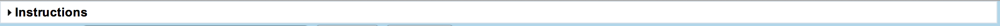
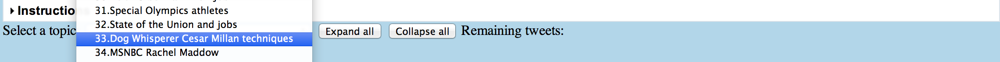
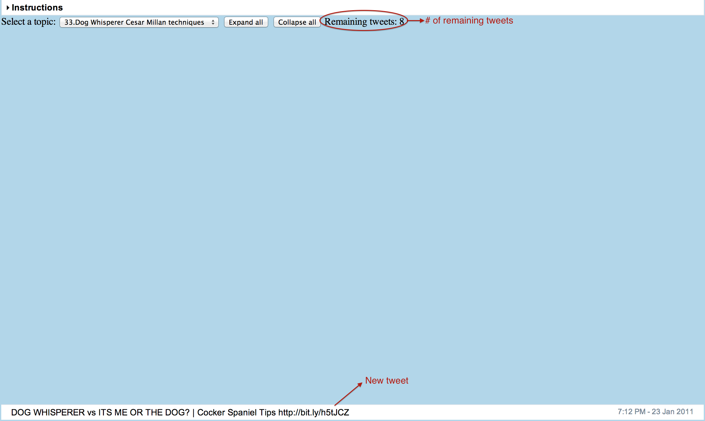
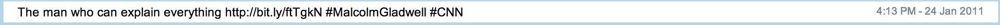
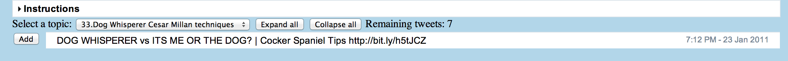
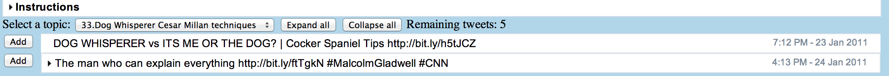
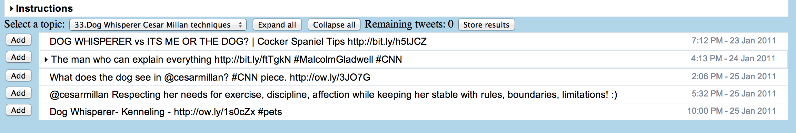

(2) Select topic 33. Whenever working on a new topic, search it online to get some background information about it. For example, a page link http://www.cesarsway.com/training/thewalk/6-Tips-for-Mastering-the-Dog-Walk might be helpful with this topic.

(3) New tweet comes one at a time at the bottom and the number of remaining tweets is displayed on the upper right. For a tweet, you can decide whether to make it a new cluster or put it in an existing cluster, and next tweet would automatically come up once a decision has been made.

(3.1) For the first tweet, just make it a new cluster by pressing Space. Each white bar here is a cluster of semantically similar tweets.

(3.2) For the second tweet,

since it doesn't share same content with the existing clusters(the first tweet), also make it a new cluster by pressing Space.

(3.3)For the third tweet,

because it's semantically similar with the second cluster, put it in the second cluster by clicking "Add" button in front of the second cluster and it will be automatically collapsed into the second cluster.

(3.4) Here you can click on "Expand all" or "Collapse all" to expand/collapse all the existing clusters.
(3.5) Fourth tweet, again, add it to the second cluster.
(3.6) Fifth tweet is highlighted with light blue color, which means system finds an existing cluster(which is also highlighted with light blue color) that is similar, you can press 'x' to take the suggestion or follow any judgment that you feel is correct and make the annotation. Note that suggestion doesn't always happen and you need to rely on your own judgment to make annotation most of the time.
(3.7) If you're regretting on any annotations and want to undo previous operations, just press 'z'.
(3.8) Keep annotating the tweets till you're done, like below:

(3.9) Click on "Store results" on the upper right, and a file window will pop up for you to store the clustering results.
The file name has been given, so you can just choose a place to store it. The annotation on this topic is done once the file has been successfully created and stored.